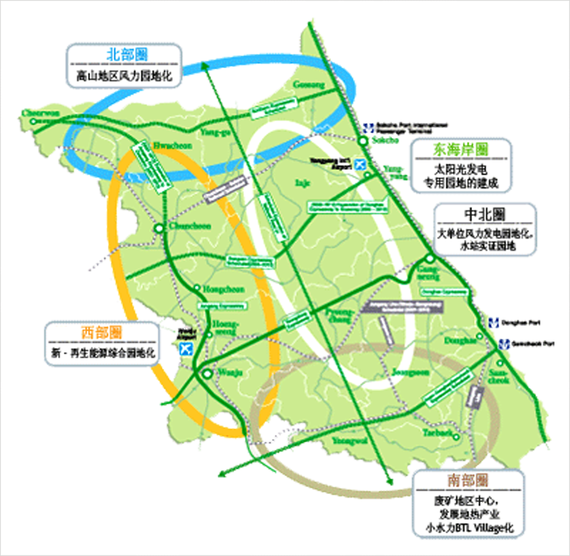

新再生能源产业
- Home
- 主要产业
- 新再生能源产业
韩国能源现况
能源需求随着韩国经济飞速发展也不断增加
- 韩国为了企业、劳动、公共和金融等4各部门达到国际水平，强烈推进了一系列改革。果断去除不实和无效果现象，实现重视市场次序的民主国家
- 以麦肯希为代表的海外有名机关认为，韩国通过今后5-6%的持续增长，到2010年购买水平有望达到先进国家水平，每个人3万美元
- 在经济发展的过程中，韩国的能源需求也在持续地增加。另外一方面，不仅是高进口依存度还是气候变化合同等，随着能源环境地急剧变化，需要寻找能源市场新的生长点
韩国能源目标和推进战略
- 韩国正在制定能源政策新模式，追求可能性地持续发展新能源，方向也从政府主导转换成市场主导型的能源政策。
韩国新能源（代替能源）开发政策
现况
- 韩国新能源的比重只占能源消费的1.24%
- 新能源的模式和废弃物利用热占大部分的93%
新能源开发政策
- 法定部将每年树立和推进新能源开发的实施政策
- 投入代替能源设备认证制度，通过品质的认证来确保消费者的信誉度
- 通过运营新能源性能评价中心和实证研究园地，构成技术耐久性，信誉度，标准化
- 优先购买新能源和实施差额保全制度
- 树立对新能源设施设置费用减免税收, 对R&D进行现金支援, 扩大关税减免制度的范围等金融支援计划
江原道新能源开发战略
构成适合江原道自然环境的新ㆍ再生能源谷
- 活用江原道保有的全国最高风力资源，发展成为风力发电产业中心地
- 随着气候变化和约，实施缩减温室气体排除量义务
- 先进国 2008 ~ 2012间，和90年相比，排除量最少缩减 5.8%
- 韩国从2013开始，作为义务国家，政府推进新能源确保对策 → 希望新能源生产能够急增
开发战略
- 构成5大不同区域的新ㆍ再生能源谷
- 投资规模 : 到2015年投入 6573亿韩元
- 现在占总能源消费量2.86%的新ㆍ再生能源的比率在今后 10年将被增加到 10.19%
- 组成地热、风力发电2大新能源产业
- 基础构成: 江原大学ㆍ三涉大学的 R/D中心的成立和培养地热技术人员等
- 地热产业的促成: 维持地热核心附件工厂等
主要不同区域开发计划


북부권 - 고산지역 풍력단지화, 동해안권 - 태양광발전 전문단지조성 저풍속풍력 특성화단지화,
중부권 - 대단위 풍력발전 단지화 수소 staion 실증단지, 서부권 - 신ㆍ재생 에너지 복합단지화,
남부권 - 폐광지역중심 지열산업육성 소수력 BTLㆍVillage화

东海岸 | 西北圈
发展理念
- 东海岸圈 - 成立东海岸太阳光发电园地化, 低速风力发电研究园地
- 西部圈- 地热等新·再生能源综合园地化
推进战略
- 准备推进社会福利设施化石能源ZERO化(提供100%的太阳光/热, 地热等新·再生能源)项目
- 作为太阳光发点专用园地，推进韩国一流观光休闲地区东海岸和旅游产业相连接
- 发展地热和风力相接的第2江原道新ㆍ再生能源产业(推进成立R&D中心，培养地热技术人员，维持地热核心附件企业，成立世界地热热泵协会韩国分会等)
中部 | 北部圈
开发理念
- 中部圈 - 推进成立风力发电集中地和设备产业化
- 北部圈 - 连接、高山地区风力发电园地化(利用非武装地带的和平性)
推进战略
- 构成风力发电集中地 : 风力发电园地-风力产业化
- 风力资源调查和 Wind Map制作，引进民资、外资，构成基础设施
- 在实践研究园地内成立认证中心，使它成为国际性认证机关
中北圈
开发理念
成立水库为中心的能源公园推进战略
为了将来能把水能源作为核心能源来开发，构成基础设施，无限向R&D设施的水站提供土地的战略南部圈
开发理念
利用丰富的山林和水资源，普及生物量和小水力发电推进战略
- 小水力- 利用自然落差的小规模BTL（开发- 所有权转移-租借）的方式来开发
- 小水力 : 使用基本设施，优先开发经济性确保的设施
- 生物量 : 在生物量发电所生产出的温水活用于地方暖气设备,
- 生物量 : 被生产的电力将使用于一定的地区和盈余电力进行销售
支援和鼓励政策
主要投资项目
- 风力发电
- 风力资源现况和产业推进计划
| 地区名 | 调查时间 | 调查结果 | 推进事项 | |
|---|---|---|---|---|
| 平均风速 (m/sec) |
能源密度 (w/㎡) |
|||
| 大关岭展望台 | ’00. 9 ~ ’01.11 | 9.7 | 1,212 | 江原风力发电 2.0MW 49기 |
| 衡城郡泰岐山 | ‘00. 9 ~ ’01.11 | 6.3 | 397 | |
| 泰岐山 咸白山 | ‘00. 9 ~ ’01.11 | 7.7 | 465 | GE＋Posco 1.5MW30기 |
| “ 梅峰 | ‘01. 3 ~ ’02. 7 | 8.4 | 746 | 太白市 0.85MW 8기 |
| “ 陂材（音译) | ‘01. 3 ~ ’02. 7 | 5.4 | 250 | |
| “ 貴莱美（音译) | ‘03.11 ~ ’04. 3 | 9.4 | 南部发电 (2.0MW 10기) | |
| 平昌郡 六百斗落(斗落为计量单位) | ‘04. 8 ~ ’05. 9 | 6.2 | 南部发电 (2.0MW 10기) | |
| 杨口均 突山岭 | ‘03.11 ~ ’04. 3 | 9.5 | 中部发电 (2.0MW 10기) | |
组成地热产业园地
- 依据新能源开发和利用普及促进法，而实行的新能源利用义务赋税
※ 新能源使用赋课: 政府出资机关，3,000㎡ 以上的新建筑物可使用总工程费的5%以上的新能源设备 - 活用太阳光能源和地热能源，来满足有可能急增的冷暖气的需求
- 太阳光能源设置在屋顶上，对美观上可能会有影响
- 希望能够更多地使用对美观没有影响的地热
- 为了活用地热能源，有必要生产必需的热泵（Hit Pump），但是韩国主要以进口为主
- 今后，为满足不断增加的需求，国内将直接进行生产和销售和地热有关的产业
- 树立和江原道环境条件相符合的积极支援计划
租税领域(高科技基础产业的情况下)
- 国税: 法人税，所得税 5年间减免 100%，这以后2年减免50%
- 地方税 : 取得税，登入税 - 全额免 / 综合土地税，财产税- 15年全额减免
- 关税，所得税，附加税: 投资申告3年以内投入的生产资料 100% 减免
- 对于1百万以上的高技术基础业种，投资入住的租赁费和税金减免
保证金支援
雇用保证金支援
- 支援对象 : 对于相当企业(制造业)外国人投资比率 30%以上的，外国人作为第一大股东的情况下
- 支援基准 : 新雇用国内人员超过 10名以上的正规职员
- 支援金额 : 每个人每月支援 50万韩元雇用保证金(3年内)
教育培训保证金支援
- 支援对象 : 对于相当企业(制造业)外国人投资比率 30%以上的，外国人作为第一大股东的情况下
- 支援基准 : 新雇用国内人员超过 10名以上的正规职员
- 支援金额 : 6个月范围内，每个人补助50万韩元